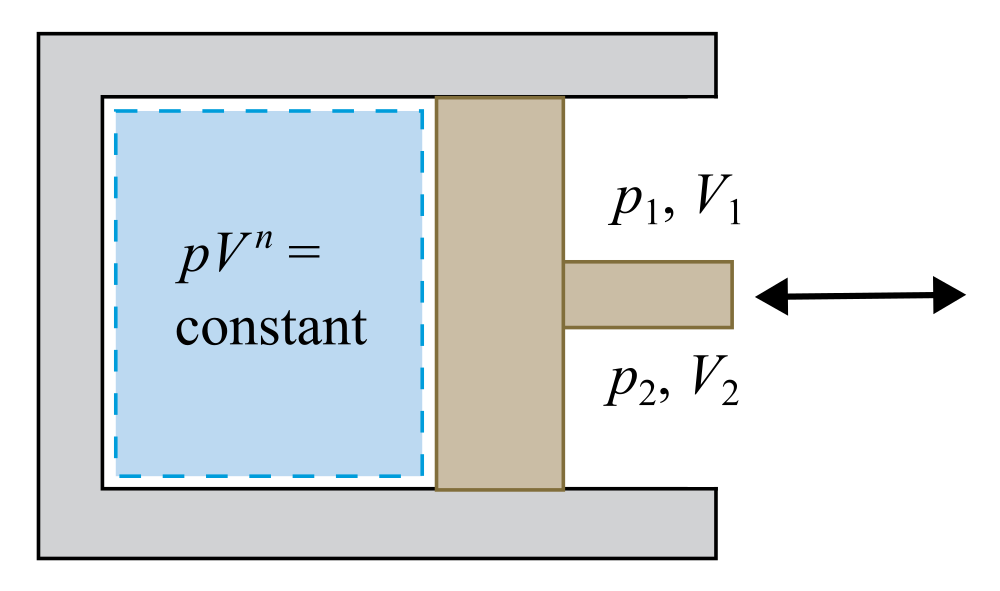

Polytropic process work equation for a closed system with ideal gas
\( \text{Polytropic process: } pV^n = \text{constant} \)
\( \displaystyle
\begin{aligned}
W &= \begin{cases}
mRT \ln\left(\frac{V_2}{V_1}\right) & \text{if } n = 1.0 \\
\frac{mR(T_2 - T_1)}{1 - n} & \text{if } n \neq 1.0
\end{cases} \\
&= \begin{cases}
mRT \ln\left(\frac{V_2}{V_1}\right) & \text{if } n = 1.0 \\
\frac{mRT_1[(\frac{V_1}{V_2})^n - 1]}{1 - n} & \text{if } n \neq 1.0
\end{cases}
\end{aligned}
\)
Symbols
- \(W\) — work done by the gas
- \(m\) — mass of the gas
- \( R \) — gas constant
- \(V_1\) — initial volume
- \(V_2\) — final volume
- \(T_1\) — initial thermodynamic temperature
- \(T_2\) — final thermodynamic temperature
- \(n\) — polytropic index
Note: \( mRT_1 = p_1V_1 = p_2V_2 = mRT_2 \Rightarrow T_1 = T_2 = T \rightarrow \text{Isothermal Process} \) for \( n = 1.0 \)
Derivation
From polytropic process work of a closed system, we have:
\( \displaystyle W = \int_{V_1}^{V_2} p \, dV = \begin{cases}
p_1 V_1 \ln\left(\frac{V_2}{V_1}\right) & \text{if } n = 1.0 \\
\frac{p_2 V_2 - p_1 V_1}{1 - n} & \text{if } n \neq 1.0
\end{cases} \)
For ideal gases, we have: \(pV = mRT \)
Substituting, we get:
\( \begin{aligned} \displaystyle W &= \begin{cases} mRT_1 \ln\left(\frac{V_2}{V_1}\right) & \text{if } n = 1.0 \\ \frac{mRT_2 - mRT_1}{1 - n} & \text{if } n \neq 1.0 \end{cases} \\ &= \begin{cases} mRT \ln\left(\frac{V_2}{V_1}\right) & \text{if } n = 1.0 \\ \frac{mR(T_2 - T_1)}{1 - n} & \text{if } n \neq 1.0 \end{cases} \end{aligned} \)We can derive other forms by combining the polytropic and ideal gas assumptions
For polytropic processes, we have: \( \displaystyle p_1V_1^n = p_2V_2^n \Rightarrow \frac{p_2}{p_1} = (\frac{V_1}{V_2}) ^ n \ \)
To relate temperature to volume:
\( \displaystyle \frac{T_2}{T_1} = \frac{p_2 V_2 / (mR)}{p_1 V_1 / (mR)} = \frac{p_2}{p_1} \cdot \frac{V_2}{V_1} = \left(\frac{V_1}{V_2}\right)^{n} \frac{V_2}{V_1} = \left(\frac{V_1}{V_2}\right)^{n-1} \)
Then for \( n \neq 1 \),
\( \displaystyle
W = \frac{mR(T_2 - T_1)}{1 - n}
= \frac{mRT_1(\frac{T_2}{T_1} - 1)}{1 - n}
= \frac{mRT_1[(\frac{V_1}{V_2})^{n-1} - 1]}{1 - n}
\)
Schematic

Inputs & Outputs
0.12 kg of air acting as an ideal gas in a piston-cylinder assembly undergoes a polytropic process.
Init pressure \(p_1\)
100 kPa
Init volume \(V_1\)
0.1 m³
Init temp \(T_1\)
300 K
Molar mass \(M\)
28.97 kg/kmol
Gas constant \(R\)
287.0 J/(kg·K)
Final temp \(T_2\)
... K
Final pressure \(p_2\)
... kPa
Work \(W\)
... kJ
Plot
Curves show how temperature, pressure, and work change with temperature for different polytropic indices. Drag the red point to see values at different final volumes.